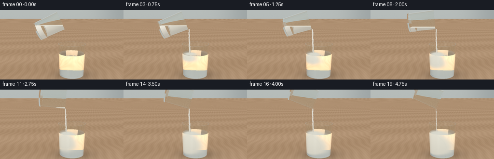
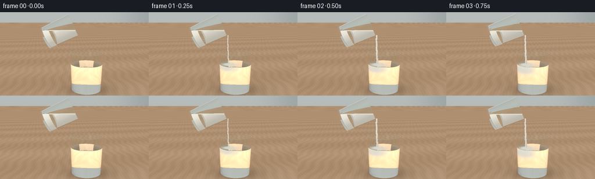
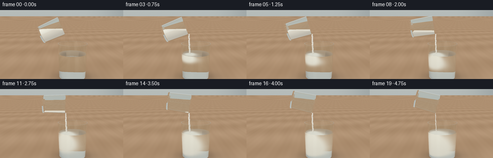
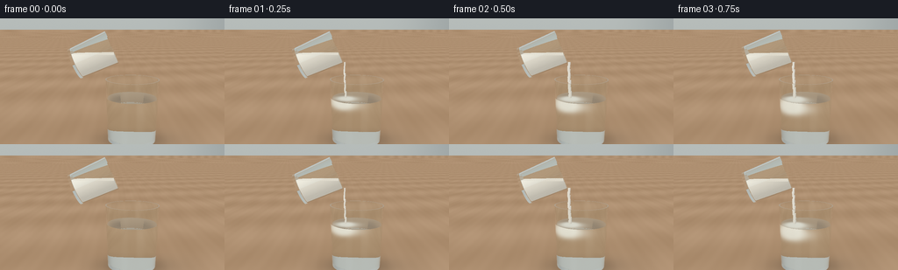
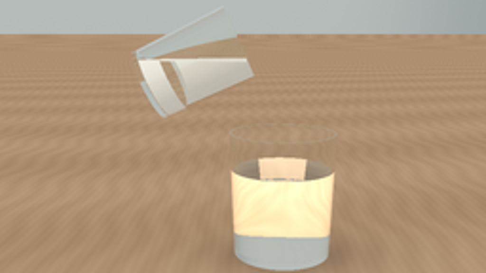

CODING AGENTS AS PIXEL WORLD MODELS
traex/GPT-6.1-Sol · material_0019
点击播放 · 原生 RGB 像素
逐轮保存的候选
回放视频、检查图与代码变化。
每份候选均可单独播放。实际图片检查记录在下方工具轨迹中。
候选 01播放与检查图
点击播放 · 原生 RGB 像素


展开代码变化
--- 上一保存版本
+++ 本次保存版本
@@ -0,0 +1,260 @@
+import json, math
+from pathlib import Path
+import numpy as np
+from PIL import Image
+from artifact_io import save
+
+ROOT=Path(__file__).resolve().parent
+SPEC=json.loads((ROOT/'task_spec.json').read_text())
+W,H=SPEC['width'],SPEC['height']
+S=3
+WW,HH=W*S,H*S
+EPS=0.0004
+INF=1e6
+rng=np.random.default_rng(31415)
+
+def normalize(a):
+ return a/np.maximum(np.linalg.norm(a,axis=-1,keepdims=True),1e-12)
+
+CAM=np.array([0.,4.25,10.])
+LOOK=np.array([0.,2.35,0.])
+F=normalize(LOOK-CAM)
+RIGHT=normalize(np.cross(F,np.array([0.,1.,0.])))
+UP=np.cross(RIGHT,F)
+xx,yy=np.meshgrid((np.arange(WW)+.5-WW/2)/(285*S),-(np.arange(HH)+.5-HH/2)/(285*S))
+D0=normalize(F+xx[...,None]*RIGHT+yy[...,None]*UP).reshape(-1,3)
+O0=np.broadcast_to(CAM,D0.shape).copy()
+LIGHT=normalize(np.array([-3.,6.,5.]))
+
+def environment(o,d):
+ # A large daylight window, a softly blurred neutral room, and a warm oak surface.
+ t=np.where(d[:,1]<-1e-6,-o[:,1]/np.minimum(d[:,1],-1e-6),INF)
+ floor=(t>0)&(t<INF/2)
+ p=o+d*np.minimum(t,500)[:,None]
+ wall= np.array([.69,.715,.705])[None,:]+(.065*d[:,1])[:,None]
+ window=np.exp(-((d[:,0]+.55)/.40)**6-((d[:,1]-.38)/.7)**6)*(d[:,2]>.0)
+ wall=wall*(1-window[:,None]*.8)+np.array([1.,.99,.94])[None,:]*window[:,None]*.8
+ # quiet defocused darker forms far behind the still life
+ dark=np.exp(-((d[:,0]-.43)/.15)**2-((d[:,1]-.08)/.36)**2)*(d[:,2]<0)
+ wall-=dark[:,None]*np.array([.10,.095,.085])
+ grain=.014*np.sin(p[:,0]*9+np.sin(p[:,2]*2)*1.4)+.007*np.sin(p[:,0]*32+p[:,2]*.65)
+ broad=.02*np.sin(p[:,2]*.9+p[:,0]*.2)
+ wood=np.array([.66,.535,.412])[None,:]+(grain+broad)[:,None]
+ # broad contact shadows and an elongated soft shadow under each glass
+ shadow=.26*np.exp(-((p[:,0]-.78)/1.18)**2-(p[:,2]/.9)**2)
+ shadow+=.06*np.exp(-((p[:,0]-1.5)/1.8)**2-((p[:,2]+.1)/1.1)**2)
+ wood*=1-shadow[:,None]
+ return np.where(floor[:,None],wood,wall)
+
+# An oriented, finite tapered cylinder. The surfaces are mathematical geometry;
+# no outside renderer or simulation is used.
+def cylinder_hit(o,d,base,axis,h,r0,r1,inner=None,bottom=.07,clip_y=None):
+ q=o-base
+ a=q@axis; da=d@axis
+ qr=q-a[:,None]*axis; dr=d-da[:,None]*axis
+ best=np.full(len(o),INF); normals=np.zeros_like(o)
+ slope=(r1-r0)/h
+ def accept(t,n,valid):
+ nonlocal best,normals
+ sel=valid&(t>EPS)&(t<best)
+ best[sel]=t[sel]; normals[sel]=n[sel]
+ def side(rad0,sl,zmin,zmax,sign):
+ rr=rad0+sl*a
+ A=np.sum(dr*dr,axis=1)-(sl*da)**2
+ B=2*(np.sum(qr*dr,axis=1)-rr*sl*da)
+ C=np.sum(qr*qr,axis=1)-rr*rr
+ disc=B*B-4*A*C
+ sq=np.sqrt(np.maximum(disc,0))
+ for t in ((-B-sq)/(2*np.where(abs(A)>1e-10,A,1e-10)),(-B+sq)/(2*np.where(abs(A)>1e-10,A,1e-10))):
+ z=a+da*t
+ radial=qr+dr*t[:,None]
+ n=normalize(radial-sl*(rad0+sl*z)[:,None]*axis)*sign
+ valid=(disc>=0)&(z>=zmin)&(z<=zmax)
+ if clip_y is not None:
+ valid &= (o[:,1]+d[:,1]*t<=clip_y+1e-6)
+ accept(t,n,valid)
+ side(r0,slope,0,h,1)
+ if inner is not None:
+ side(r0-inner,slope,bottom,h,-1)
+ def cap(z,normal,rin,rout):
+ t=(z-a)/np.where(abs(da)>1e-10,da,1e-10)
+ rad=qr+dr*t[:,None]
+ rr=np.sum(rad*rad,axis=1)
+ valid=(rr<=rout*rout)&(rr>=rin*rin)
+ if clip_y is not None: valid&=(o[:,1]+d[:,1]*t<=clip_y+1e-6)
+ accept(t,np.broadcast_to(normal,o.shape),valid)
+ cap(0,-axis,0,r0)
+ if inner is not None:
+ cap(bottom,axis,0,r0+slope*bottom-inner)
+ cap(h,axis,r1-inner,r1)
+ else:
+ cap(h,axis,0,r1)
+ if clip_y is not None:
+ t=(clip_y-o[:,1])/np.where(abs(d[:,1])>1e-10,d[:,1],1e-10)
+ p=q+d*t[:,None]; z=p@axis
+ radial=p-z[:,None]*axis
+ valid=(z>=0)&(z<=h)&(np.sum(radial*radial,axis=1)<(r0+slope*z)**2)
+ accept(t,np.broadcast_to([0.,1.,0.],o.shape),valid)
+ return best,normals
+
+def erf_fast(x):
+ sg=np.sign(x); a=np.abs(x); t=1/(1+.3275911*a)
+ v=1-(((((1.061405429*t-1.453152027)*t)+1.421413741)*t-.284496736)*t+.254829592)*t*np.exp(-a*a)
+ return sg*v
+
+
+def clouds(frame, water_h, lip):
+ time=frame/4
+ amount=max(0,(time-.20)/4.2)
+ if amount<=0:return []
+ ls=[]
+ # Narrow descending core and loose buoyant eddies expanding into the water.
+ depth=min(1.54,.15+time*.34)
+ for j in range(9):
+ f=j/8
+ y=water_h-depth*f
+ x=lip[0]+.09+ .12*np.sin(f*8-time*.7)*f
+ z=.035+ .09*np.sin(f*6+time)*f
+ width=.055+.24*f+amount*.09
+ ls.append((np.array([x,y,z]),np.array([width,.095+depth*.08,width*.78]),(.85+amount*.95)*(1-.35*f)))
+ # Individual trailing lobes make a visible flour bloom rather than uniform fading.
+ for j in range(7):
+ phase=j*2.399
+ f=(j+.5)/7
+ spread=(.11+.35*amount)*f
+ x=lip[0]+.12+np.cos(phase)*spread
+ y=water_h-depth*(.45+.50*f)+.05*np.sin(time+j)
+ z=np.sin(phase)*spread*.72
+ ls.append((np.array([x,y,z]),np.array([.13+.17*amount,.12+.19*amount,.12+.16*amount]),.38+amount*.65))
+ ls.append((np.array([.75,.80,.0]),np.array([.60,.65,.63]),amount**2*.24))
+ # A light raft of dry flour at the waterline.
+ ls.append((np.array([lip[0]+.06,water_h-.01,0.]),np.array([.13+amount*.2,.037,.16+amount*.16]),1.4+amount))
+ return ls
+
+
+def render(frame):
+ u=frame/19
+ sm=u*u*(3-2*u)
+ theta=math.radians(65+48*sm)
+ axis=np.array([math.sin(theta),math.cos(theta),0.])
+ radial=np.array([math.cos(theta),-math.sin(theta),0.])
+ lip=np.array([.25,3.45,0.])
+ src_h=1.85; src_r=.72
+ mouth=lip-src_r*radial
+ base=mouth-src_h*axis
+ # Grain surface remains level with gravity while the glass rotates.
+ flour_level=3.78-.33*sm
+ flow=min(1,max(0,(frame-.3)/2))*min(1,max(0,(19.5-frame)/3.5))
+ wh=1.73+.055*sm
+ cloud_list=clouds(frame,wh,lip)
+ origin=O0.copy(); direction=D0.copy()
+ ids=np.arange(len(origin))
+ result=np.zeros_like(origin)
+ throughput=np.ones_like(origin)
+ # scene objects: receiving glass, clear water, pouring glass, dry flour
+ for bounce in range(9):
+ if not len(ids):break
+ best=np.full(len(ids),INF); normal=np.zeros_like(origin); material=np.zeros(len(ids),np.int32)
+ def add(t,n,m):
+ nonlocal best,normal,material
+ sel=t<best
+ best[sel]=t[sel];normal[sel]=n[sel];material[sel]=m
+ b=np.array([.75,.075,0.]); up=np.array([0.,1.,0.])
+ add(*cylinder_hit(origin,direction,b,up,2.35,.92,1.01,inner=.046,bottom=.12),1)
+ add(*cylinder_hit(origin,direction,np.array([.75,.2,0.]),up,wh-.2,.918,.942),2)
+ add(*cylinder_hit(origin,direction,base,axis,src_h,.665,.72,inner=.045,bottom=.09),1)
+ add(*cylinder_hit(origin,direction,base+axis*.105,axis,src_h-.13,.625,.667,clip_y=flour_level),3)
+ # Soft, irregular rope of powder falling from the lowest edge of the tilted glass.
+ if flow>.01:
+ count=10
+ total=lip[1]-wh+.08
+ for j in range(count):
+ y1=lip[1]-total*j/count+.045
+ y0=lip[1]-total*(j+1)/count-.015
+ frac=j/count
+ x=lip[0]+.034+ .07*frac**1.7+.012*math.sin(j*2.4+frame*.9)
+ z=.005+.01*math.sin(j*1.8+frame*.4)
+ r=(.035+.017*math.sin(j*3.1+frame*.83)**2+.018*frac)*(.45+.55*flow)
+ add(*cylinder_hit(origin,direction,np.array([x,y0,z]),up,y1-y0,r*.87,r),3)
+ miss=best>INF/2
+ # Beer-Lambert scattering through the flour cloud, analytically integrated
+ # through smoothly varying three-dimensional Gaussian wisps.
+ mid=origin+direction*.003
+ inwater=(mid[:,1]>.2)&(mid[:,1]<wh)&(((mid[:,0]-.75)**2+mid[:,2]**2)<.944**2)
+ if cloud_list and np.any(inwater):
+ ix=np.flatnonzero(inwater)
+ oo=origin[ix];dd=direction[ix];tt=np.minimum(best[ix],3.0)
+ depth=np.zeros(len(ix))
+ for c,scale,density in cloud_list:
+ q=(oo-c)/scale; v=dd/scale
+ aa=np.sum(v*v,axis=1); bb=np.sum(q*v,axis=1)/aa
+ perp=np.sum(q*q,axis=1)-aa*bb*bb
+ integ=np.sqrt(np.pi/(2*aa))*np.exp(-.5*np.maximum(0,perp))*(erf_fast(np.sqrt(aa/2)*(tt+bb))-erf_fast(np.sqrt(aa/2)*bb))
+ depth+=density*integ
+ alpha=1-np.exp(-depth*2.7)
+ lightness=.92-.075*np.clip((wh-oo[:,1])/1.6,0,1)
+ scatter=np.stack([lightness,lightness*.985,lightness*.93],axis=1)
+ result[ids[ix]]+=throughput[ix]*alpha[:,None]*scatter
+ throughput[ix]*=1-alpha[:,None]
+ if np.any(miss):
+ result[ids[miss]]+=throughput[miss]*environment(origin[miss],direction[miss])
+ keep=~miss
+ if not np.any(keep):break
+ hit=origin[keep]+direction[keep]*best[keep,None]
+ n=normal[keep]; d=direction[keep];m=material[keep]
+ th=throughput[keep]; idx=ids[keep]
+ opaque=m==3
+ if np.any(opaque):
+ pp=hit[opaque]; nn=n[opaque]
+ diffuse=np.maximum(0,nn@LIGHT)
+ tex=np.sin(pp[:,0]*181+np.sin(pp[:,2]*162))*np.sin(pp[:,1]*197+np.sin(pp[:,0]*85))
+ tex+=.5*np.sin(pp[:,0]*477+pp[:,1]*379+pp[:,2]*293)
+ shade=.75+.20*diffuse+.024*tex
+ col=shade[:,None]*np.array([1.,.974,.917])
+ result[idx[opaque]]+=th[opaque]*col
+ transparent=~opaque
+ if not np.any(transparent):break
+ hit=hit[transparent];n=n[transparent];d=d[transparent];m=m[transparent]
+ th=th[transparent];idx=idx[transparent]
+ nd=np.sum(n*d,axis=1)
+ entry=nd<0
+ nn=np.where(entry[:,None],n,-n)
+ ior=np.where(m==1,1.505,1.333)
+ eta=np.where(entry,1/ior,ior)
+ cosi=np.clip(-np.sum(d*nn,axis=1),0,1)
+ k=1-eta*eta*(1-cosi*cosi)
+ reflect=d+2*cosi[:,None]*nn
+ fres=((ior-1)/(ior+1))**2
+ fres=fres+(1-fres)*(1-cosi)**5
+ tir=k<0
+ fres[tir]=1
+ reflection=environment(hit+nn*.002,reflect)
+ # Broad studio-window reflection and a delicate cool edge catchlight.
+ specular=np.exp(-((reflect[:,0]+.47)/.18)**4-((reflect[:,1]-.4)/.65)**4)*(reflect[:,2]>.0)
+ reflection=reflection*(1-.6*specular[:,None])+np.array([1.12,1.10,1.04])*specular[:,None]*.6
+ result[idx]+=th*fres[:,None]*reflection
+ th*= (1-fres[:,None])
+ th*=np.where((m==1)[:,None],np.array([.992,.998,.996]),np.array([.998,.999,.998]))
+ refract=eta[:,None]*d+(eta*cosi-np.sqrt(np.maximum(k,0)))[:,None]*nn
+ direction=normalize(np.where(tir[:,None],reflect,refract))
+ origin=hit+direction*.001
+ # internal reflections retain energy but omit their weak multiple images
+ good=(np.max(th,axis=1)>.008)&(~tir)
+ ids=idx[good];throughput=th[good];origin=origin[good];direction=direction[good]
+ if len(ids):result[ids]+=throughput*environment(origin,direction)
+ img=np.clip(result.reshape(HH,WW,3),0,1)
+ # Tiny deterministic sensor grain, with gentle photographic tone response.
+ img=np.clip(img,0,1)**.92
+ noise=np.random.default_rng(100+frame).normal(0,.0017,(HH,WW,1))
+ img=np.uint8(np.clip(img+noise,0,1)*255+.5)
+ return np.asarray(Image.fromarray(img).resize((W,H),Image.Resampling.LANCZOS))
+
+
+def main():
+ frames=[]
+ for i in range(SPEC['frames']):
+ frames.append(render(i))
+ print(f'Rendered frame {i+1}/{SPEC["frames"]}',flush=True)
+ save(np.stack(frames),ROOT)
+
+if __name__=='__main__':main()
候选 02播放与检查图
点击播放 · 原生 RGB 像素


展开代码变化
--- 上一保存版本
+++ 本次保存版本
@@ -21,7 +21,7 @@
F=normalize(LOOK-CAM)
RIGHT=normalize(np.cross(F,np.array([0.,1.,0.])))
UP=np.cross(RIGHT,F)
-xx,yy=np.meshgrid((np.arange(WW)+.5-WW/2)/(285*S),-(np.arange(HH)+.5-HH/2)/(285*S))
+xx,yy=np.meshgrid((np.arange(WW)+.5-WW/2)/(310*S),-(np.arange(HH)+.5-HH/2)/(310*S))
D0=normalize(F+xx[...,None]*RIGHT+yy[...,None]*UP).reshape(-1,3)
O0=np.broadcast_to(CAM,D0.shape).copy()
LIGHT=normalize(np.array([-3.,6.,5.]))
@@ -37,7 +37,7 @@
# quiet defocused darker forms far behind the still life
dark=np.exp(-((d[:,0]-.43)/.15)**2-((d[:,1]-.08)/.36)**2)*(d[:,2]<0)
wall-=dark[:,None]*np.array([.10,.095,.085])
- grain=.014*np.sin(p[:,0]*9+np.sin(p[:,2]*2)*1.4)+.007*np.sin(p[:,0]*32+p[:,2]*.65)
+ grain=.008*np.sin(p[:,0]*3.4+np.sin(p[:,2]*.6)*1.4)+.003*np.sin(p[:,0]*12+p[:,2]*.25)
broad=.02*np.sin(p[:,2]*.9+p[:,0]*.2)
wood=np.array([.66,.535,.412])[None,:]+(grain+broad)[:,None]
# broad contact shadows and an elongated soft shadow under each glass
@@ -135,15 +135,15 @@
def render(frame):
u=frame/19
sm=u*u*(3-2*u)
- theta=math.radians(65+48*sm)
+ theta=math.radians(66+39*sm)
axis=np.array([math.sin(theta),math.cos(theta),0.])
radial=np.array([math.cos(theta),-math.sin(theta),0.])
- lip=np.array([.25,3.45,0.])
- src_h=1.85; src_r=.72
+ lip=np.array([.25,3.03,0.])
+ src_h=1.50; src_r=.64
mouth=lip-src_r*radial
base=mouth-src_h*axis
# Grain surface remains level with gravity while the glass rotates.
- flour_level=3.78-.33*sm
+ flour_level=3.39-.32*sm
flow=min(1,max(0,(frame-.3)/2))*min(1,max(0,(19.5-frame)/3.5))
wh=1.73+.055*sm
cloud_list=clouds(frame,wh,lip)
@@ -162,8 +162,8 @@
b=np.array([.75,.075,0.]); up=np.array([0.,1.,0.])
add(*cylinder_hit(origin,direction,b,up,2.35,.92,1.01,inner=.046,bottom=.12),1)
add(*cylinder_hit(origin,direction,np.array([.75,.2,0.]),up,wh-.2,.918,.942),2)
- add(*cylinder_hit(origin,direction,base,axis,src_h,.665,.72,inner=.045,bottom=.09),1)
- add(*cylinder_hit(origin,direction,base+axis*.105,axis,src_h-.13,.625,.667,clip_y=flour_level),3)
+ add(*cylinder_hit(origin,direction,base,axis,src_h,.59,.64,inner=.045,bottom=.09),1)
+ add(*cylinder_hit(origin,direction,base+axis*.105,axis,src_h-.13,.545,.592,clip_y=flour_level),3)
# Soft, irregular rope of powder falling from the lowest edge of the tilted glass.
if flow>.01:
count=10
@@ -199,7 +199,9 @@
if np.any(miss):
result[ids[miss]]+=throughput[miss]*environment(origin[miss],direction[miss])
keep=~miss
- if not np.any(keep):break
+ if not np.any(keep):
+ ids=np.array([],dtype=int)
+ break
hit=origin[keep]+direction[keep]*best[keep,None]
n=normal[keep]; d=direction[keep];m=material[keep]
th=throughput[keep]; idx=ids[keep]
@@ -213,7 +215,9 @@
col=shade[:,None]*np.array([1.,.974,.917])
result[idx[opaque]]+=th[opaque]*col
transparent=~opaque
- if not np.any(transparent):break
+ if not np.any(transparent):
+ ids=np.array([],dtype=int)
+ break
hit=hit[transparent];n=n[transparent];d=d[transparent];m=m[transparent]
th=th[transparent];idx=idx[transparent]
nd=np.sum(n*d,axis=1)
候选 03播放与检查图
点击播放 · 原生 RGB 像素

展开代码变化
--- 上一保存版本
+++ 本次保存版本
@@ -17,11 +17,11 @@
return a/np.maximum(np.linalg.norm(a,axis=-1,keepdims=True),1e-12)
CAM=np.array([0.,4.25,10.])
-LOOK=np.array([0.,2.35,0.])
+LOOK=np.array([0.,2.24,0.])
F=normalize(LOOK-CAM)
RIGHT=normalize(np.cross(F,np.array([0.,1.,0.])))
UP=np.cross(RIGHT,F)
-xx,yy=np.meshgrid((np.arange(WW)+.5-WW/2)/(310*S),-(np.arange(HH)+.5-HH/2)/(310*S))
+xx,yy=np.meshgrid((np.arange(WW)+.5-WW/2)/(273*S),-(np.arange(HH)+.5-HH/2)/(273*S))
D0=normalize(F+xx[...,None]*RIGHT+yy[...,None]*UP).reshape(-1,3)
O0=np.broadcast_to(CAM,D0.shape).copy()
LIGHT=normalize(np.array([-3.,6.,5.]))
@@ -236,6 +236,9 @@
# Broad studio-window reflection and a delicate cool edge catchlight.
specular=np.exp(-((reflect[:,0]+.47)/.18)**4-((reflect[:,1]-.4)/.65)**4)*(reflect[:,2]>.0)
reflection=reflection*(1-.6*specular[:,None])+np.array([1.12,1.10,1.04])*specular[:,None]*.6
+ edge_light=np.exp(-((n[:,0]+.94)/.035)**2)*(n[:,2]>.05)*(m==1)*.19
+ edge_light+=np.exp(-((n[:,0]-.88)/.035)**2)*(n[:,2]>.05)*(m==1)*.07
+ result[idx]+=th*edge_light[:,None]*np.array([.98,1.,1.])
result[idx]+=th*fres[:,None]*reflection
th*= (1-fres[:,None])
th*=np.where((m==1)[:,None],np.array([.992,.998,.996]),np.array([.998,.999,.998]))
候选 04播放与检查图
可观测工具轨迹
实际执行的命令与返回图片。
命令 1exit 0
/bin/bash -lc 'ls -la && cat prompt.txt && cat GENERATION_RULES.md && cat task_spec.json'
命令 2exit 0
/bin/bash -lc 'cat artifact_io.py'
命令 3exit 0
/bin/bash -lc "cat > generate.py <<'PY'
import json, math
from pathlib import Path
import numpy as np
from PIL import Image
from artifact_io import save
ROOT=Path(__file__).resolve().parent
SPEC=json.loads((ROOT/'task_spec.json').read_text())
W,H=SPEC['width'],SPEC['height']
S=3
WW,HH=W*S,H*S
EPS=0.0004
INF=1e6
rng=np.random.default_rng(31415)
def normalize(a):
return a/np.maximum(np.linalg.norm(a,axis=-1,keepdims=True),1e-12)
CAM=np.array([0.,4.25,10.])
LOOK=np.array([0.,2.35,0.])
F=normalize(LOOK-CAM)
RIGHT=normalize(np.cross(F,np.array([0.,1.,0.])))
UP=np.cross(RIGHT,F)
xx,yy=np.meshgrid((np.arange(WW)+.5-WW/2)/(285*S),-(np.arange(HH)+.5-HH/2)/(285*S))
D0=normalize(F+xx[...,None]*RIGHT+yy[...,None]*UP).reshape(-1,3)
O0=np.broadcast_to(CAM,D0.shape).copy()
LIGHT=normalize(np.array([-3.,6.,5.]))
def environment(o,d):
# A large daylight window, a softly blurred neutral room, and a warm oak surface.
t=np.where(d[:,1]<-1e-6,-o[:,1]/np.minimum(d[:,1],-1e-6),INF)
floor=(t>0)&(t<INF/2)
p=o+d*np.minimum(t,500)[:,None]
wall= np.array([.69,.715,.705])[None,:]+(.065*d[:,1])[:,None]
window=np.exp(-((d[:,0]+.55)/.40)**6-((d[:,1]-.38)/.7)**6)*(d[:,2]>.0)
wall=wall*(1-window[:,None]*.8)+np.array([1.,.99,.94])[None,:]*window[:,None]*.8
# quiet defocused darker forms far behind the still life
dark=np.exp(-((d[:,0]-.43)/.15)**2-((d[:,1]-.08)/.36)**2)*(d[:,2]<0)
wall-=dark[:,None]*np.array([.10,.095,.085])
grain=.014*np.sin(p[:,0]*9+np.sin(p[:,2]*2)*1.4)+.007*np.sin(p[:,0]*32+p[:,2]*.65)
broad=.02*np.sin(p[:,2]*.9+p[:,0]*.2)
wood=np.array([.66,.535,.412])[None,:]+(grain+broad)[:,None]
# broad contact shadows and an elongated soft shadow under each glass
shadow=.26*np.exp(-((p[:,0]-.78)/1.18)**2-(p[:,2]/.9)**2)
shadow+=.06*np.exp(-((p[:,0]-1.5)/1.8)**2-((p[:,2]+.1)/1.1)**2)
wood*=1-shadow[:,None]
return np.where(floor[:,None],wood,wall)
# An oriented, finite tapered cylinder. The surfaces are mathematical geometry;
# no outside renderer or simulation is used.
def cylinder_hit(o,d,base,axis,h,r0,r1,inner=None,bottom=.07,clip_y=None):
q=o-base
a=q@axis; da=d@axis
qr=q-a[:,None]*axis; dr=d-da[:,None]*axis
best=np.full(len(o),INF); normals=np.zeros_like(o)
slope=(r1-r0)/h
def accept(t,n,valid):
nonlocal best,normals
sel=valid&(t>EPS)&(t<best)
best[sel]=t[sel]; normals[sel]=n[sel]
def side(rad0,sl,zmin,zmax,sign):
rr=rad0+sl*a
A=np.sum(dr*dr,axis=1)-(sl*da)**2
B=2*(np.sum(qr*dr,axis=1)-rr*sl*da)
C=np.sum(qr*qr,axis=1)-rr*rr
disc=B*B-4*A*C
sq=np.sqrt(np.maximum(disc,0))
for t in ((-B-sq)/(2*np.where(abs(A)>1e-10,A,1e-10)),(-B+sq)/(2*np.where(abs(A)>1e-10,A,1e-10))):
z=a+da*t
radial=qr+dr*t[:,None]
n=normalize(radial-sl*(rad0+sl*z)[:,None]*axis)*sign
valid=(disc>=0)&(z>=zmin)&(z<=zmax)
if clip_y is not None:
valid &= (o[:,1]+d[:,1]*t<=clip_y+1e-6)
accept(t,n,valid)
side(r0,slope,0,h,1)
if inner is not None:
side(r0-inner,slope,bottom,h,-1)
def cap(z,normal,rin,rout):
t=(z-a)/np.where(abs(da)>1e-10,da,1e-10)
rad=qr+dr*t[:,None]
rr=np.sum(rad*rad,axis=1)
valid=(rr<=rout*rout)&(rr>=rin*rin)
if clip_y is not None: valid&=(o[:,1]+d[:,1]*t<=clip_y+1e-6)
accept(t,np.broadcast_to(normal,o.shape),valid)
cap(0,-axis,0,r0)
if inner is not None:
cap(bottom,axis,0,r0+slope*bottom-inner)
cap(h,axis,r1-inner,r1)
else:
cap(h,axis,0,r1)
if clip_y is not None:
t=(clip_y-o[:,1])/np.where(abs(d[:,1])>1e-10,d[:,1],1e-10)
p=q+d*t[:,None]; z=p@axis
radial=p-z[:,None]*axis
valid=(z>=0)&(z<=h)&(np.sum(radial*radial,axis=1)<(r0+slope*z)**2)
accept(t,np.broadcast_to([0.,1.,0.],o.shape),valid)
return best,normals
def erf_fast(x):
sg=np.sign(x); a=np.abs(x); t=1/(1+.3275911*a)
v=1-(((((1.061405429*t-1.453152027)*t)+1.421413741)*t-.284496736)*t+.254829592)*t*np.exp(-a*a)
return sg*v
def clouds(frame, water_h, lip):
time=frame/4
amount=max(0,(time-.20)/4.2)
if amount<=0:return []
ls=[]
# Narrow descending core and loose buoyant eddies expanding into the water.
depth=min(1.54,.15+time*.34)
for j in range(9):
f=j/8
y=water_h-depth*f
x=lip[0]+.09+ .12*np.sin(f*8-time*.7)*f
z=.035+ .09*np.sin(f*6+time)*f
width=.055+.24*f+amount*.09
ls.append((np.array([x,y,z]),np.array([width,.095+depth*.08,width*.78]),(.85+amount*.95)*(1-.35*f)))
# Individual trailing lobes make a visible flour bloom rather than uniform fading.
for j in range(7):
phase=j*2.399
f=(j+.5)/7
spread=(.11+.35*amount)*f
x=lip[0]+.12+np.cos(phase)*spread
y=water_h-depth*(.45+.50*f)+.05*np.sin(time+j)
z=np.sin(phase)*spread*.72
ls.append((np.array([x,y,z]),np.array([.13+.17*amount,.12+.19*amount,.12+.16*amount]),.38+amount*.65))
ls.append((np.array([.75,.80,.0]),np.array([.60,.65,.63]),amount**2*.24))
# A light raft of dry flour at the waterline.
ls.append((np.array([lip[0]+.06,water_h-.01,0.]),np.array([.13+amount*.2,.037,.16+amount*.16]),1.4+amount))
return ls
def render(frame):
u=frame/19
sm=u*u*(3-2*u)
theta=math.radians(65+48*sm)
axis=np.array([math.sin(theta),math.cos(theta),0.])
radial=np.array([math.cos(theta),-math.sin(theta),0.])
lip=np.array([.25,3.45,0.])
src_h=1.85; src_r=.72
mouth=lip-src_r*radial
base=mouth-src_h*axis
# Grain surface remains level with gravity while the glass rotates.
flour_level=3.78-.33*sm
flow=min(1,max(0,(frame-.3)/2))*min(1,max(0,(19.5-frame)/3.5))
wh=1.73+.055*sm
cloud_list=clouds(frame,wh,lip)
origin=O0.copy(); direction=D0.copy()
ids=np.arange(len(origin))
result=np.zeros_like(origin)
throughput=np.ones_like(origin)
# scene objects: receiving glass, clear water, pouring glass, dry flour
for bounce in range(9):
if not len(ids):break
best=np.full(len(ids),INF); normal=np.zeros_like(origin); material=np.zeros(len(ids),np.int32)
def add(t,n,m):
nonlocal best,normal,material
sel=t<best
best[sel]=t[sel];normal[sel]=n[sel];material[sel]=m
b=np.array([.75,.075,0.]); up=np.array([0.,1.,0.])
add(*cylinder_hit(origin,direction,b,up,2.35,.92,1.01,inner=.046,bottom=.12),1)
add(*cylinder_hit(origin,direction,np.array([.75,.2,0.]),up,wh-.2,.918,.942),2)
add(*cylinder_hit(origin,direction,base,axis,src_h,.665,.72,inner=.045,bottom=.09),1)
add(*cylinder_hit(origin,direction,base+axis*.105,axis,src_h-.13,.625,.667,clip_y=flour_level),3)
# Soft, irregular rope of powder falling from the lowest edge of the tilted glass.
if flow>.01:
count=10
total=lip[1]-wh+.08
for j in range(count):
y1=lip[1]-total*j/count+.045
y0=lip[1]-total*(j+1)/count-.015
frac=j/count
x=lip[0]+.034+ .07*frac**1.7+.012*math.sin(j*2.4+frame*.9)
z=.005+.01*math.sin(j*1.8+frame*.4)
r=(.035+.017*math.sin(j*3.1+frame*.83)**2+.018*frac)*(.45+.55*flow)
add(*cylinder_hit(origin,direction,np.array([x,y0,z]),up,y1-y0,r*.87,r),3)
miss=best>INF/2
# Beer-Lambert scattering through the flour cloud, analytically integrated
# through smoothly varying three-dimensional Gaussian wisps.
mid=origin+direction*.003
inwater=(mid[:,1]>.2)&(mid[:,1]<wh)&(((mid[:,0]-.75)**2+mid[:,2]**2)<.944**2)
if cloud_list and np.any(inwater):
ix=np.flatnonzero(inwater)
oo=origin[ix];dd=direction[ix];tt=np.minimum(best[ix],3.0)
depth=np.zeros(len(ix))
for c,scale,density in cloud_list:
q=(oo-c)/scale; v=dd/scale
aa=np.sum(v*v,axis=1); bb=np.sum(q*v,axis=1)/aa
perp=np.sum(q*q,axis=1)-aa*bb*bb
integ=np.sqrt(np.pi/(2*aa))*np.exp(-.5*np.maximum(0,perp))*(erf_fast(np.sqrt(aa/2)*(tt+bb))-erf_fast(np.sqrt(aa/2)*bb))
depth+=density*integ
alpha=1-np.exp(-depth*2.7)
lightness=.92-.075*np.clip((wh-oo[:,1])/1.6,0,1)
scatter=np.stack([lightness,lightness*.985,lightness*.93],axis=1)
result[ids[ix]]+=throughput[ix]*alpha[:,None]*scatter
throughput[ix]*=1-alpha[:,None]
if np.any(miss):
result[ids[miss]]+=throughput[miss]*environment(origin[miss],direction[miss])
keep=~miss
if not np.any(keep):break
hit=origin[keep]+direction[keep]*best[keep,None]
n=normal[keep]; d=direction[keep];m=material[keep]
th=throughput[keep]; idx=ids[keep]
opaque=m==3
if np.any(opaque):
pp=hit[opaque]; nn=n[opaque]
diffuse=np.maximum(0,nn@LIGHT)
tex=np.sin(pp[:,0]*181+np.sin(pp[:,2]*162))*np.sin(pp[:,1]*197+np.sin(pp[:,0]*85))
tex+=.5*np.sin(pp[:,0]*477+pp[:,1]*379+pp[:,2]*293)
shade=.75+.20*diffuse+.024*tex
col=shade[:,None]*np.array([1.,.974,.917])
result[idx[opaque]]+=th[opaque]*col
transparent=~opaque
if not np.any(transparent):break
hit=hit[transparent];n=n[transparent];d=d[transparent];m=m[transparent]
th=th[transparent];idx=idx[transparent]
nd=np.sum(n*d,axis=1)
entry=nd<0
nn=np.where(entry[:,None],n,-n)
ior=np.where(m==1,1.505,1.333)
eta=np.where(entry,1/ior,ior)
cosi=np.clip(-np.sum(d*nn,axis=1),0,1)
k=1-eta*eta*(1-cosi*cosi)
reflect=d+2*cosi[:,None]*nn
fres=((ior-1)/(ior+1))**2
fres=fres+(1-fres)*(1-cosi)**5
tir=k<0
fres[tir]=1
reflection=environment(hit+nn*.002,reflect)
# Broad studio-window reflection and a delicate cool edge catchlight.
specular=np.exp(-((reflect[:,0]+.47)/.18)**4-((reflect[:,1]-.4)/.65)**4)*(reflect[:,2]>.0)
reflection=reflection*(1-.6*specular[:,None])+np.array([1.12,1.10,1.04])*specular[:,None]*.6
result[idx]+=th*fres[:,None]*reflection
th*= (1-fres[:,None])
th*=np.where((m==1)[:,None],np.array([.992,.998,.996]),np.array([.998,.999,.998]))
refract=eta[:,None]*d+(eta*cosi-np.sqrt(np.maximum(k,0)))[:,None]*nn
direction=normalize(np.where(tir[:,None],reflect,refract))
origin=hit+direction*.001
# internal reflections retain energy but omit their weak multiple images
good=(np.max(th,axis=1)>.008)&(~tir)
ids=idx[good];throughput=th[good];origin=origin[good];direction=direction[good]
if len(ids):result[ids]+=throughput*environment(origin,direction)
img=np.clip(result.reshape(HH,WW,3),0,1)
# Tiny deterministic sensor grain, with gentle photographic tone response.
img=np.clip(img,0,1)**.92
noise=np.random.default_rng(100+frame).normal(0,.0017,(HH,WW,1))
img=np.uint8(np.clip(img+noise,0,1)*255+.5)
return np.asarray(Image.fromarray(img).resize((W,H),Image.Resampling.LANCZOS))
def main():
frames=[]
for i in range(SPEC['frames']):
frames.append(render(i))
print(f'Rendered frame {i+1}/{SPEC[\"frames\"]}',flush=True)
save(np.stack(frames),ROOT)
if __name__=='__main__':main()
PY
OPENBLAS_NUM_THREADS=1 python generate.py"命令 4exit 0
/bin/bash -lc "python - <<'PY'
from PIL import Image
im=Image.open('frames/00.png');im.resize((1024,576)).save('.tmp/first_large.png')
PY"命令 5exit 0
/bin/bash -lc "python - <<'PY'
p='generate.py'
s=open(p).read().replace('(285*S)','(310*S)')
s=s.replace('grain=.014*np.sin(p[:,0]*9+np.sin(p[:,2]*2)*1.4)+.007*np.sin(p[:,0]*32+p[:,2]*.65)','grain=.008*np.sin(p[:,0]*3.4+np.sin(p[:,2]*.6)*1.4)+.003*np.sin(p[:,0]*12+p[:,2]*.25)')
s=s.replace('65+48*sm','66+39*sm').replace('lip=np.array([.25,3.45,0.])','lip=np.array([.25,3.03,0.])').replace('src_h=1.85; src_r=.72','src_h=1.50; src_r=.64').replace('flour_level=3.78-.33*sm','flour_level=3.39-.32*sm')
s=s.replace('src_h,.665,.72,inner=.045','src_h,.59,.64,inner=.045').replace('src_h-.13,.625,.667','src_h-.13,.545,.592')
s=s.replace('if not np.any(keep):break','if not np.any(keep):\\n ids=np.array([],dtype=int)\\n break')
s=s.replace('if not np.any(transparent):break','if not np.any(transparent):\\n ids=np.array([],dtype=int)\\n break')
open(p,'w').write(s)
PY
OPENBLAS_NUM_THREADS=1 python generate.py"命令 6exit 0
/bin/bash -lc "python - <<'PY'
p='generate.py';s=open(p).read().replace('2.35,0.])','2.24,0.])').replace('(310*S)','(273*S)')
s=s.replace('result[idx]+=th*fres[:,None]*reflection','edge_light=np.exp(-((n[:,0]+.94)/.035)**2)*(n[:,2]>.05)*(m==1)*.19\\n edge_light+=np.exp(-((n[:,0]-.88)/.035)**2)*(n[:,2]>.05)*(m==1)*.07\\n result[idx]+=th*edge_light[:,None]*np.array([.98,1.,1.])\\n result[idx]+=th*fres[:,None]*reflection')
open(p,'w').write(s)
PY
OPENBLAS_NUM_THREADS=1 python generate.py"视觉工具实际返回图片 1

视觉工具实际返回图片 2

视觉工具实际返回图片 3

视觉工具实际返回图片 4

保存候选 4 份；完成命令 6 次；可验证图片返回 4 张。原始 API 响应与完整日志保留在本地。